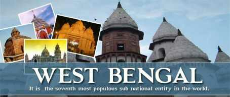

|

|
West-Bengal
West Bengal is the only state that
combines the triple travel thrills of the
mountains, the plains and the
coastline. Darjeeling, where the mist is
like a tantalizing curtain to the beauty
of the Kanchendzonga; Shanti
Niketan, the home of the 'poet'
Rabindra Nath Tag o r e ; the
Sunderbans, the largest estuarine
forest in the world; and Digha,
promising sun, sea, sand, surfing and
seafood! Calcutta, now renamed
Kolkata – the 'city of joy', has
overtones of fish, Marx and literature
in equal measures. This first city built
by the British was the earlier capital of
India, before shifting base to Delhi.
|
 HAPPY JOURNEY .COM |
creating happy travellers
HAPPY JOURNEY .COM |
creating happy travellers
 St John's Cathedral, GPO
Reserve Bank of India Birla
Planetarium
Science City and the.The
here is one of the largest
of its kind in the world. is
the first institution of its kind in India.
The pioneering effort of NCSM, the
open air Science Parks have brought
science out of doors and alive.
built between
1839 and 1847, houses interesting
memorials and stained glass, including
the west window by Sir Edward
Burne-Jones. is home Eden Gardens
to Kolkata's cricket activity. One can
stroll along the banks of the Hooghly
around here. You can also take a short
cruise down the Hooghly with the
Vidyasagar Setu Bridge etched in the
background.
St John's Cathedral, GPO
Reserve Bank of India Birla
Planetarium
Science City and the.The
here is one of the largest
of its kind in the world. is
the first institution of its kind in India.
The pioneering effort of NCSM, the
open air Science Parks have brought
science out of doors and alive.
built between
1839 and 1847, houses interesting
memorials and stained glass, including
the west window by Sir Edward
Burne-Jones. is home Eden Gardens
to Kolkata's cricket activity. One can
stroll along the banks of the Hooghly
around here. You can also take a short
cruise down the Hooghly with the
Vidyasagar Setu Bridge etched in the
background.